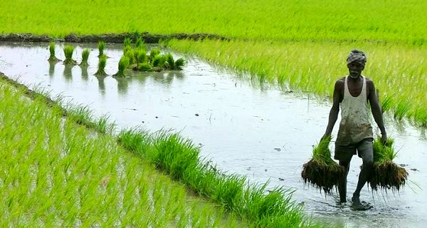
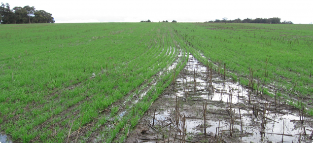

Imagine hitting the ground going 20 miles per hour. Well, according to the Iowa State University Extension
and Outreach article “Reduce Potential Soil Erosion in the Spring,” this is the speed of a raindrop in a
normal rainfall.
When the raindrop hits the ground it will splash soil particles from 3 to 5 feet.
This action breaks up soil aggregates, clogs soil pores reducing infiltration and increasing runoff of both
water and the soil it is carrying.

Slow it down, protect the ground
Anything that protects the soil from the speed of the
raindrop will decrease the damage it causes.
Organic mulch, cover crops, the canopy of the new crop and
permanent vegetation are all means of slowing
down the rain drop.
Leaving at least 30 % crop residue on the surface through
no-till or reduced tillage can help.
The residue provides a surface for the raindrop to hit
before it hits the soils. This will absorb some of
the raindrop’s energy and slow it down, reducing the impact.
Add cover crops to the system
Cover crops (such as sorghum, callaloo, guinea grass, peanut
etc.) provide a cushion just
like the residue, but they also provide a root structure
that can hold the soil in place.
Provide permanent vegetation in areas where gullies
typically form to slow the movement of water as it
travels down the hill.
Establishing a growing crop that canopies quickly will
protect the soil from future rains.
If soil crusts due to heavy rains after planting, using a
rotary hoe as soon as soil conditions allow will
help the crop emerge.
Heavy Rains, floods - what can be done to protect crops?
Here are a few considerations for farmers:
1. Pre-plant fertilizer?
Did you fertilize your crop just before the recent rains? Is that nitrogen you put out a week ago, still
there? The short answer is probably: No.
Nitrogen is readily leached by water from the soil and nitrogen uptake into the plant is inhibited under
saturated soil conditions.
· Farmers should watch their crop development and may choose to
side-dress with nitrogen fertilizers as soon
as the soil dries out.
o
Foliar applications of nitrogen are also an option if soils stay wet for extended periods of
time
that inhibit the use of fertigation.
· In flooded soils nitrate based fertilizers are preferred over
ammonium based fertilizers. Research
(University of Florida) found potassium nitrate to help alleviate stress associated with saturated soils
(Liu et al, Publication #SL 206).
· Potassium nitrate can be applied as a foliar spray. The age of the
crop in question and plans for future
fertilization should dictate the rate of nitrogen fertilizer applied now.
2. Waterlogged Soils- Transplants
· As fields dry out and equipment can be brought back into the field
light cultivation around young plants
may help bring air back into the soil.
· If crops were lost and immediate re-planting is not possible consider
a short-term cover crop (Appendix)
to provide short-term soil cover.
3. Waterlogged Soils- Plastic mulched raised beds
· The longer the flooding the greater the chances that roots start to
shut down due to the lack of oxygen in
the soil that gets pushed out by the water.

Some signs of damage to look for:
Flower, leaf, or fruit drop are all symptoms of waterlogging stress on plants.
Root crops may show areas of cell death that appear as dark areas. If the main tap root of the carrot is
killed secondary fibrous roots will likely form which are not marketable.
You may see a higher incidence of blossom end rot on tomato, pepper or melon crops. Blossom end rot is when
there is a lack of calcium in the plant that results in rot like symptoms opposite the stem end.
During flooding the roots shut down and stop taking up water or nutrients which can lead to these symptoms.
4. Food Safety and Crop Loss Due to Rot
There are two major concerns when flood waters come in contact with ripe produce:
1)
Rots & 2) Food safety.
· The incidence of rot will vary based on the type of produce e.g.
lettuce may be more susceptible to
deterioration than melon due to it’s tougher skin.
· Direct contact of flood water and produce that is ready for harvest
can be a major food safety concern.
Flood water from streams/ rivers is more likely to contain human pathogens than surface water. The incidence
of rot will vary based on the type of produce e.g. lettuce may be more susceptible to deterioration than
melon due to it’s tougher skin
· Ripe produce that has come in contact with flood waters should not be
harvested for sale.
· Immature produce should be handled appropriately when harvested in
the future including washing with
chlorinated water (Speak with your RADA Extension Officer).
5. Look out for diseases
· Wet conditions favour disease development in your fields. Fungicide
spray programmes should be maintained
using appropriate systemic products for leaf (foliar) and especially root disease causing organisms
(pathogens). Contact your RADA Extension Officer for more information – ask about crop pesticide list.
o
Phytopthera and Pythium both thrive under wet soil conditions.
· Farmers should keep an eye out for flare-ups of diseases such as gray
mold, anthracnose, and leaf spots in
general. Root rots could also become a problem in fields that stayed wet for extended periods.
6. Improving Water drainage in fields
· Water drainage management is critical even without the heavy rains, in this very wet period, farmer who
use plastic mulch raised bed systems (plasticulture) where water sheds from plastic beds into the row
middles should be particularly careful. Farmers should consider row orientation and if cutting drainage
channels at the ends of rows will help the field shed water (medium-long term management– involves
strategies to reduce soil compaction especially for heavy trafficked rows).
· It is always important to keep in mind deep tillage usually doesn’t result in long-term improvements to
soil structure and can rapidly deplete soil organic matter which actually helps improve water infiltration.
Deep rooted cover crops, like sorghum can help to break up layers of compaction over time.
With heavy rains as we have just experienced, damage and crop loss is inevitable, consider these suggestions
to reduce the impact on your field.